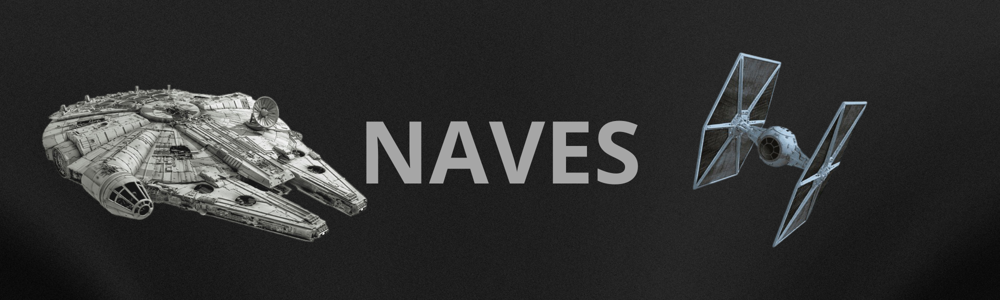
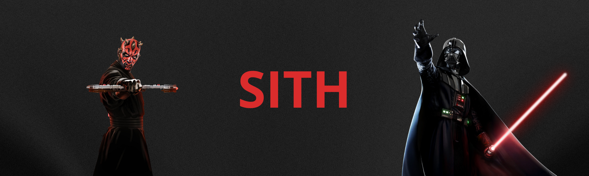

Neste artigo, o foco está na filosofia, treinamento e códigos da Ordem Jedi. Mostra como os Jedis surgiram, seu papel na galáxia e os dilemas morais enfrentados, especialmente durante a queda da República. Também analisa figuras centrais como Yoda, Obi-Wan e Luke Skywalker, e como eles mantiveram viva a esperança em tempos sombrios.
12/07/2025

As Naves Mais Icônicas de Star Wars – Do Caos Rebelde ao Domínio
Imperial
Este artigo explora as naves mais famosas do universo Star Wars, como a Millennium Falcon, os X-Wings e os TIE Fighters. Ele analisa suas origens, funções em batalha e como se tornaram símbolos tanto da Rebelião quanto do Império. Também são abordados os avanços tecnológicos fictícios que inspiram fãs e engenheiros no mundo real
11/07/2025

Sith – A Ascensão do Lado Sombrio e a Busca pelo Poder Absoluto
Este texto mergulha na história sombria dos Sith, explorando sua origem, ideologia de poder absoluto e rivalidade eterna com os Jedi. Examina personagens como Darth Sidious, Darth Vader e Kylo Ren, revelando como o medo, a raiva e a ambição corrompem até os mais promissores. O artigo também discute a Regra de Dois e como ela moldou o destino da galáxia.